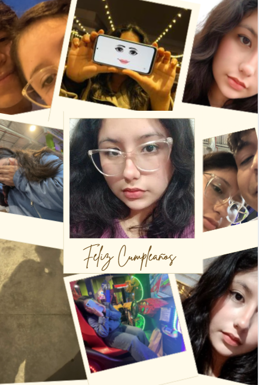

Incluso en el infierno, contigo: Todo lo que quiero eres tú.
Así como dice la letra de Please: La canción dice que no importa cómo el mundo intente separarnos o lo difíciles que se pongan las cosas, siempre daré un paso adelante para estar contigo. Así como dice la letra: "Quédate conmigo en mi peor día, que yo te abrazaré más fuerte". Te amo y siempre voy a estar aquí para proteger lo nuestro. 💜

💜💜💜¡Feliz cumple a la ARMY más hermosa del mundo!. Espero que pases un día increíble mi amorchito. Solo te recuerdo que tu bias vive al otro lado del planeta y ni sabe que existes, pero aquí tienes a tu novio real que te ama con todo el corazón. Que la vida te regale tanta felicidad como un video de ellos. Te amo muchoooooooooo 💜💜💜